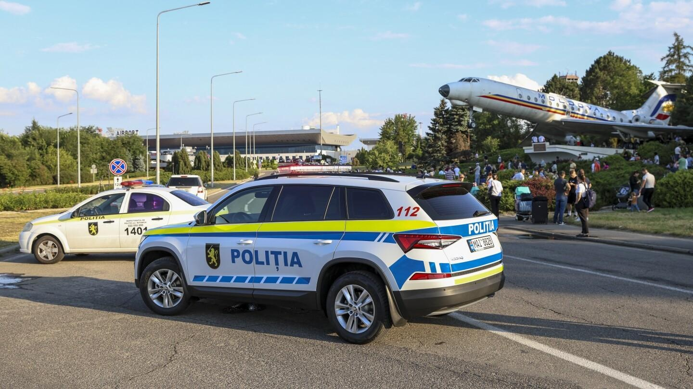

Tajik man who fatally shot 2 security officers at Moldova airport dies in hospitalTajik man who fatally shot 2 security officers at Moldova airport dies in hospital CHISINAU, Moldova (AP) — A Tajikistan citizen who fatally shot two security officers at the airport in Moldova’s capital last week died Monday from injuries he sustained when officers subdued him, authorities said. The attacker, who Tajikistan prosecutors later identified as Rustam Ashurov, 43, was hospitalized Friday after being seriously injured by security forces who apprehended him after the shooting at Chisinau International Airport. Ashurov had just opened fire on two airport staff after being denied entry into the country. Ashurov had grabbed a guard’s weapon as he was being escorted away by officials, which he then used in the attack. Besides the security personnel who were killed, one traveler was injured in the shooting. Moldova’s president, Maia Sandu, identified the people killed as a border police officer and an airport security employee. “The person suspected of the double murder at Chisinau International Airport died 15 minutes ago,” Moldova’s national police announced on their Telegram channel at 10:36 p.m. local time Monday. The General Prosecutor’s Office of Tajikistan said after the attack Friday that Ashurov was wanted in his home country in connection with the alleged kidnapping of the deputy chairman of a bank in Dushanbe, the Central Asian country’s capital, on June 23. The prosecutor’s office said Ashurov, a resident of Dushanbe, fled to Moldova via Turkey after a criminal investigation was launched “with the aim of going into hiding in EU countries.” Moldova’s acting prosecutor general, Ion Munteanu, said after the airport shooting that a criminal case for “murder with aggravated circumstances” had been filed. He said Ashurov had been detained at the border because he “could not clearly explain the reason for arrival and the purpose of being in the territory of the Republic of Moldova.” Moldova has declared July 4 a national day of mourning for the two slain security officers, with flags at state institutions flown at half-staff, and a minute of silence observed around midday. Authorities have also advised against establishments holding “mass entertainment events” on the day. |
 |